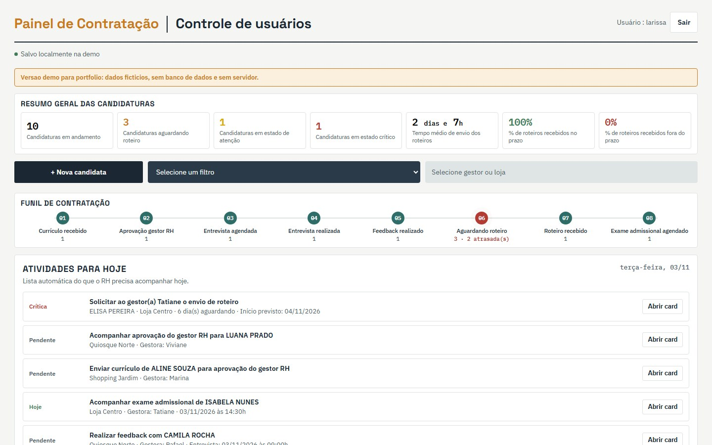
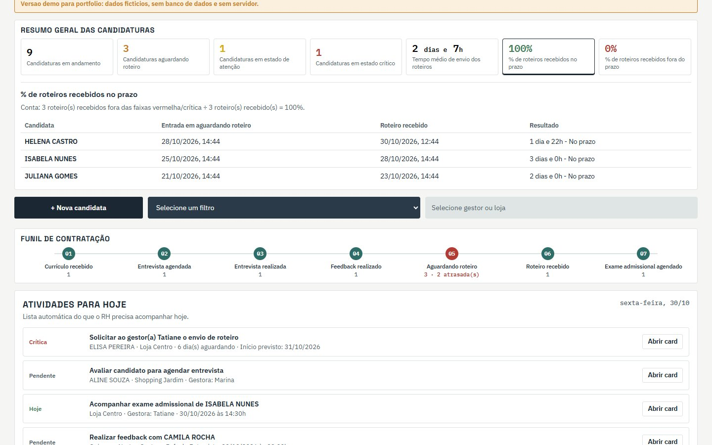
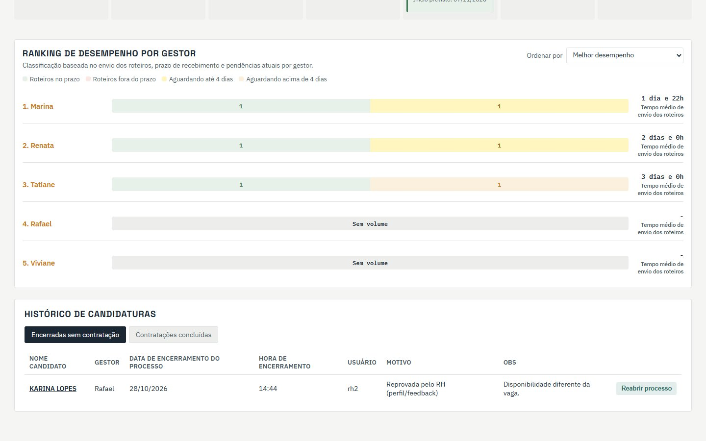
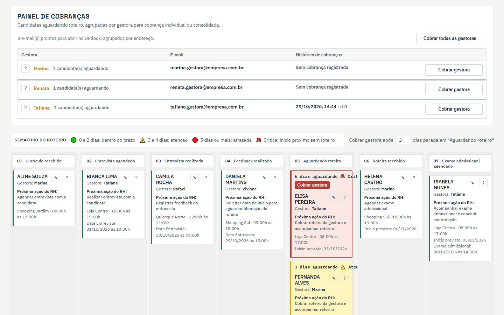
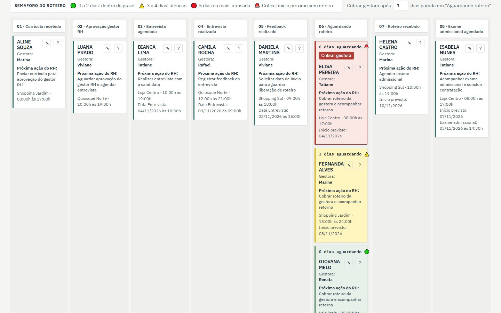
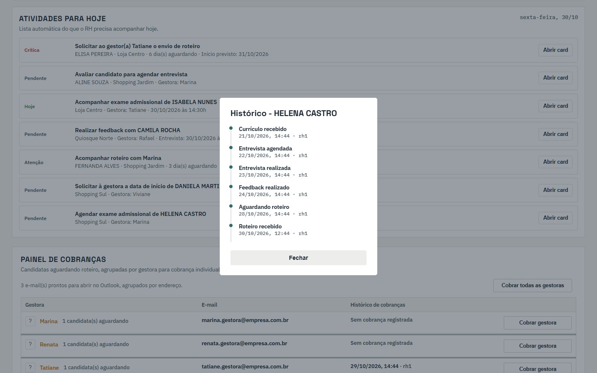
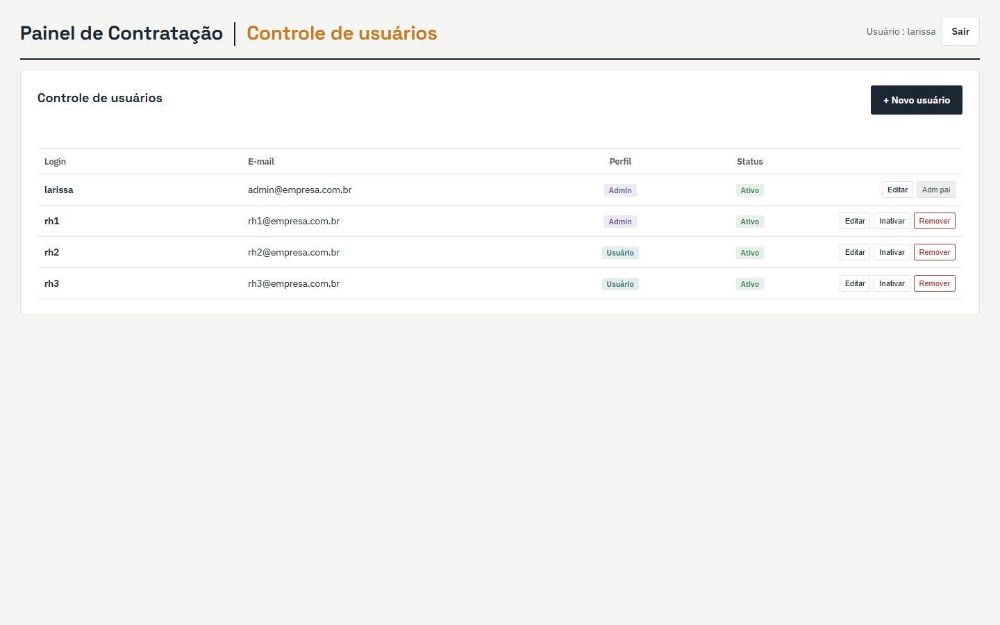

Del currículum a la contratación, sin perder la asignación.
Un panel para que RR. HH. siga a cada candidata desde la revisión del currículum hasta la contratación concluida. La etapa que más se traba, la espera de la asignación de la gerente, recibió un semáforo de plazo, recordatorios por correo, indicadores con el cálculo a la vista y un ranking por gerente.

La contratación que nadie está mirando.
Una candidata pasa por entrevista, retroalimentación, examen médico de ingreso y contratación. A mitad de camino, sin embargo, el proceso sale de las manos de RR. HH.: después de la aprobación, la gerente de la tienda tiene que enviar la asignación, el lugar de trabajo de la nueva contratada. Mientras no llega, nada avanza, y la fecha de inicio se acerca.
¿Quién está detenida, hace cuántos días, con qué gerente, y a quién ya se le envió un recordatorio? La respuesta tiene que estar en la pantalla, no en la memoria de alguien.
Cada candidata en su lugar
Un tablero con una columna por etapa, el conteo en el embudo y la próxima acción de RR. HH. escrita en cada tarjeta.
La espera de la asignación
La etapa Esperando asignación tiene semáforo propio, plazo configurable y alerta de inicio próximo.
De la pendiente al correo
Las pendientes se convierten en correos listos para la gerente, y cada recordatorio queda registrado con fecha y usuario.
El cuello de botella en el centro, el historial intacto.
Cuatro reglas guiaron las decisiones del panel:
Vigilar la etapa que se traba
La etapa 06, Esperando asignación, se trata como cuello de botella en el código: tiene color propio en el embudo, orden por urgencia, filtros, recordatorios e indicadores dedicados.
Cada etapa pide el dato que la define
Arrastrar a Entrevista agendada pide fecha y hora; a Esperando asignación, la fecha prevista de inicio; a Examen médico de ingreso, la fecha y hora del examen. Sin el dato, la candidata no avanza.
Nada desaparece sin registro
Cerrar exige motivo y detalle, que van al historial. Eliminar es una acción aparte, pide confirmación y avisa que no se puede deshacer. Cualquier proceso cerrado se puede reabrir.
La próxima acción siempre a la vista
Cada tarjeta dice lo que RR. HH. tiene que hacer ahora, y la lista Actividades para hoy reúne las entrevistas del día, exámenes, retroalimentaciones y asignaciones atrasadas, por prioridad.
Del currículum recibido a la contratación concluida.
El tablero tiene una columna para cada una de las ocho primeras etapas; la novena, Contratación concluida, va al historial. En cada tarjeta aparece la próxima acción de RR. HH.:
Currículum recibido
enviar el currículum para la aprobación del gerente de RR. HH.
Aprobación del gerente de RR. HH.
esperar la aprobación del gerente de RR. HH. y agendar la entrevista
Entrevista agendada
realizar la entrevista · fecha y hora obligatorias al entrar
Entrevista realizada
registrar la retroalimentación de la entrevista
Retroalimentación dada
solicitar la fecha de inicio para esperar la liberación de la asignación
Esperando asignación
enviar el recordatorio de la asignación a la gerente y seguir la respuesta · fecha prevista de inicio obligatoria
Asignación recibida
agendar el examen médico de ingreso
Examen médico agendado
seguir el examen y concluir la contratación · fecha y hora obligatorias
Contratación concluida
proceso concluido, con fecha, hora y el usuario que lo aprobó
Arrastrar y soltar
Las tarjetas cambian de etapa al arrastrarlas y soltarlas entre las columnas. En la columna del cuello de botella, las tarjetas se ordenan por el semáforo (crítica, atrasada, atención, en plazo); en las demás, por la fecha de apertura.
Cerrar con motivo
Rechazada por RR. HH., rechazada en el examen médico de ingreso, desistimiento de la candidata, vacante cancelada por la tienda u otro. El detalle es obligatorio y la etapa en la que se detuvo el proceso queda guardada.
Días detenida e inicio próximo, en un solo color.
Toda candidata en Esperando asignación recibe una franja, calculada por los días desde que entró en la etapa y por la fecha prevista de inicio informada al avanzar:
| Franja | Regla | Qué hace el panel |
|---|---|---|
| 🟢 En plazo | 0 a 2 días esperando | La sigue sin alerta |
| ⚠️ Atención | 3 a 4 días esperando | Entra en Actividades para hoy como “seguir asignación” |
| 🔴 Atrasada | 5 días o más | Botón Enviar recordatorio a la gerente en la tarjeta y actividad prioritaria |
| 🚨 Crítica | Inicio previsto en 2 días o menos, sin importar el tiempo de espera | Sube al inicio de la columna y de la lista del día |
La regla crítica va primero: una candidata detenida hace un día, pero con inicio pasado mañana, ya es crítica. Aparte del semáforo, el campo Enviar recordatorio a la gerente después de N días (3 por defecto) define cuándo el embudo marca a las candidatas como atrasadas y la tarjeta se pone roja.
La asignación solo cuenta como recibida en plazo si llegó antes de que la candidata pasara a roja o crítica.
Siete números, cada uno con su cálculo.
El resumen general trae siete indicadores. Al hacer clic en cualquiera se abre la lista de candidatas detrás del número y, en los calculados, la cuenta escrita por extenso, por ejemplo: “3 asignación(es) recibida(s) fuera de las franjas roja/crítica ÷ 3 asignación(es) recibida(s) = 100%”.
En curso
Ni cerradas ni contratadas.
Crítico
Inicio próximo sin asignación.
Tiempo promedio
Suma de las esperas cerradas ÷ asignaciones recibidas.
% en plazo
Recibidas antes de la franja roja o crítica.
% fuera de plazo
Recibidas ya en la franja roja o crítica.
Ranking de desempeño por gerente
Cada gerente recibe una barra apilada con asignaciones en plazo, fuera de plazo, esperando hasta 4 días y esperando más de 4 días, además del tiempo promedio de envío. El orden predeterminado usa una puntuación que premia el plazo y penaliza los atrasos:
puntuación = % en plazo + 8 × en plazo − 12 × fuera de plazo − 10 × esperando más de 4 días − mín(tiempo promedio en horas ÷ 6, 20)
Otros cinco órdenes están a un clic: más asignaciones en plazo, más fuera de plazo, menor tiempo promedio, más esperando hasta 4 días y más esperando más de 4 días.


De la pendiente al correo listo, con registro.
El panel de recordatorios agrupa por gerente a las candidatas que esperan asignación. El recordatorio abre un correo ya redactado en el cliente de correo (Outlook), con la lista de candidatas, la tienda y los días de espera, y guarda quién lo envió y cuándo.
mailto:asunto y cuerpo completadosTres formas de enviar recordatorios
Individual, desde la tarjeta atrasada o crítica; consolidado, por gerente; o todos a la vez, agrupados por dirección de correo.
Envío guiado
En el lote, el panel abre un correo a la vez. Al volver, “marcar enviado y abrir siguiente” registra el recordatorio y sigue con la fila.
Último recordatorio de la etapa actual
La fila de la gerente muestra solo los recordatorios enviados después de la entrada en la etapa actual, para no confundirlos con recordatorios antiguos.

Una candidatura lleva su propia historia.
Cada candidatura es un registro único con la etapa actual, el momento en que entró en ella (entrouEm) y dos listas: el historial de etapas y los recordatorios. Los indicadores se calculan a partir de esas listas.
Reglas que mantienen los números honestos
etapasMigradasV2).etapasMigradasV3) avanza una posición las etapas desde la 02, una sola vez por registro. El servidor rechaza los guardados de pestañas abiertas con la versión anterior y pide recargar la página, y el cambio se probó en una copia de la base de datos antes de publicarlo.Una página de trabajo y una de usuarios.
La pantalla principal reúne, de arriba abajo: resumen general, filtros rápidos, embudo, actividades para hoy, panel de recordatorios, tablero por etapa, ranking por gerente e historial de candidaturas (cerradas sin contratación y contrataciones concluidas). El nombre de cada candidata abre la línea de tiempo completa, con fecha, hora y usuario de cada paso.


Perfiles de acceso
Administrador
Accede al Control de usuarios: crea, edita, activa, desactiva y elimina usuarios.
Usuario de RR. HH.
Opera el panel. Para abrir el Control de usuarios, tiene que iniciar sesión con un acceso de administrador.
El registro pide login, correo para restablecer la contraseña, perfil, estado y una contraseña de al menos 6 caracteres. La pantalla de acceso tiene “Olvidé mi contraseña”, con un enlace de restablecimiento enviado al correo registrado; en la demo, no se envía nada.

Todo en el navegador, en un solo archivo.
- HTML, CSS y JS puro
- sin dependencias de build
- etapas, semáforo e indicadores
- arrastrar y soltar entre columnas
- correos vía
mailto:
- 11 candidaturas ficticias
- usuarios de la demo
Esta versión no tiene servidor, base de datos ni login real: el acceso es directo, las llamadas de usuarios y candidaturas se responden en el propio navegador y los cambios quedan guardados en el localStorage de quien prueba. Las fechas de la demo se generan en relación con el día de hoy, así que siempre hay una entrevista del día, una asignación atrasada y una candidata crítica para ver.
Tecnologías
Arrastra una candidata a Esperando asignación.
Recorrido sugerido: lleva una tarjeta de Retroalimentación dada a Esperando asignación, indica un inicio para pasado mañana y mira cómo la tarjeta se vuelve crítica. Después, en el Panel de recordatorios, haz clic en Enviar recordatorio a la gerente y revisa el recordatorio registrado.